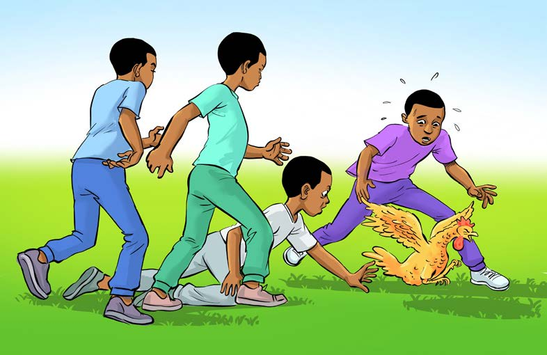

Namna ya kucheza:
1.
Andaa kuku mwenye afya njema. Anaweza kuwa jogoo au koo;
2.
Kaeni katika timu mbili. Kila timu iwe na wachezaji wasiozidi wanne kutegemea ukubwa wa kiwanja;
3.
Wanafunzi wasiocheza watengeneze duara ili kuzuia kuku asitoke anapokimbizwa;
4.
Mwongozaji ataanzisha mchezo kwa kumtupia kuku katikati ya mduara, kisha kupuliza kipenga kuanzisha mchezo; na
5.
Baada ya amri ya mwongozaji, kimbiza kuku uweze kumkamata, kama inavyoonekana katika Kielelezo namba 2.

Mambo ya kuzingatia
Kama ilivyo kwa michezo mingine, katika mchezo wa kukimbiza kuku ni muhimu kuzingatia mambo yafuatayo:
(a)
Mchezo huu huchezwa na wavulana na wasichana. Wasichana hushindana wenyewe na wavulana vivyo hivyo;